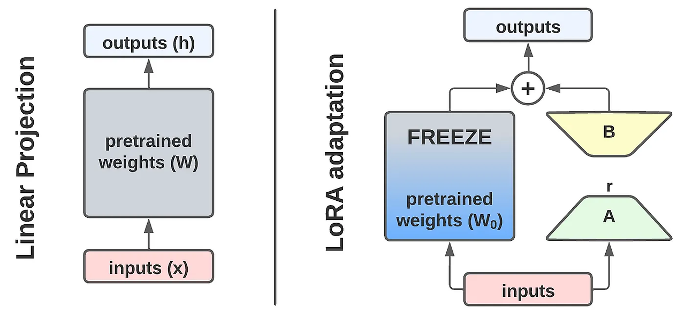
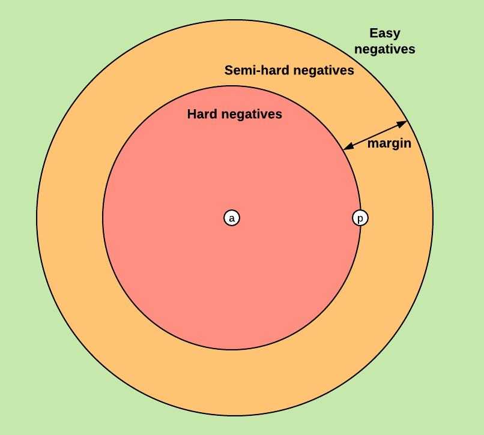
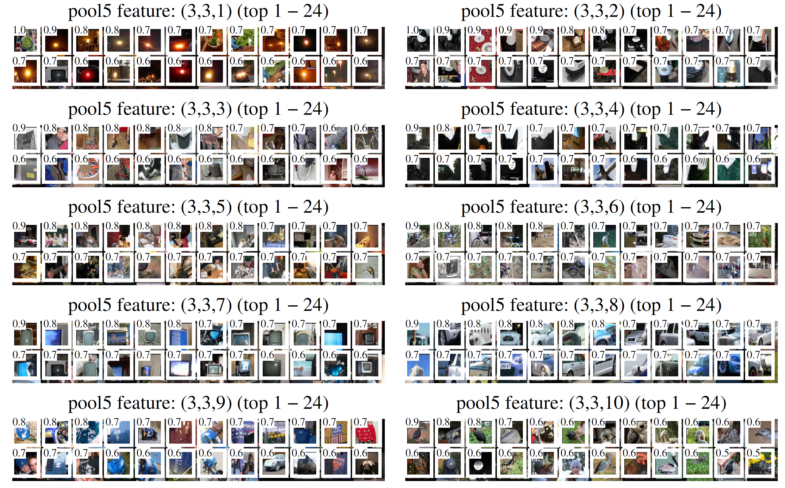

Deep networks as feature extractors
- Traditional ML framework: input $\mathbf{x}$ $\to$ task-specific target $\vy$; $\mathbf{x}$ is represented using features designed with task in mind
- Deep learning: end-to-end learning of an $L$-layer network $F$ \[\begin{align} \text{input}\;\mathbf{x}\;\to\;\text{features}\ \bphi(\vx)\,=\,F_{\text{1:L-1}}(\mathbf{x})\; & \class{rj-blur-3-}{ \to\;\text{label predictor}\;\vy\,=\,F_{L}(\mathbf{x}) }\\ & \class{rj-hide-0-2}{ \to\;\text{label predictor}\;\textcolor{red}{\vy'}\,=\, \textcolor{red}{F'_{L\class{rj-pulse-3}{\class{rj-hide-0-3}{:L'}}}}(\mathbf{x}) } \end{align} \]
- Once we learn $F(\mathbf{x})$ for a particular $h$, can reuse the features (if not the predictor) for new task $\vy'\,=\,F'(\bphi(\mathbf{x}))$
- Why might having learned $F$ (and so $\bphi$) for the original task be helpful when approaching the new task?
- We presume that there is some relationship between the tasks.
 Original
Original
 Novel
Novel
Transfer learning
- Main idea: reuse what we have learned on the original task
- Transfer: attach a new "head" $F'_{L:L'}$, often a (shallow) MLP When $F'_L$ is a single linear layer, i.e., just a linear classifier on top of $\bphi(\vx)$, we have linear probing. Its performance is often used as a measure of quality of learned features $\bphi$, to the "frozen" $F{\text{1:L}}$
- You can pre-process: compute $\vx'=F_{\text{1:L-1}}(\vx)$ for your (new) training data, save to disk, and train $F$ to map $\vx'\to\vy'$. This can save a lot of memory during the new training
- Alternative (if not feasible): run $F_{\text{1:L-1}}$ during new training, but stop the gradient flow below the new predictor:
for param in model.feature_extractor.parameters(): param.requires_grad_(False) - Depending on task similarity, you may want to remove more than one layer from the top, i.e., define $\bphi(\vx)=F_{\text{1:\textcolor{red}{L-k}}}$
Fine-tuning
- Fine-tune: attach a new head and update the weights of both $F'_{\text{1:L-1}}$ and $F'_{L:L'}$
- Again, we may replace one or more layers on top with one or more new layers
- This is much more expensive; we now have to keep the full network in memory and run forward and backward passes during training
- But: both feature transfer and fine-tuning are likely to succeed with much less data than it took to train the original model!
- Major concern: forgetting. After fine-tuning to $\vy'$ we may no longer be able to predict the labels $\vy$ for the original task. Many efforts to combat this (we will see some shortly)
LoRA
- Most common fine-tuning technique today: Low Rank Adaptation (LoRA, Hu et al., 2021)
- Weights in transformers (and other models) are matrices: $\mathbf{W}_k,\mathbf{W}_q,\mathbf{W}_v$ in attention, MLP layers, etc.
- Recall: singular value decomposition allows us to approximate a $n\times d$ matrix as a product of two small matrices, $n\times k$ and $k\times d$ (rank $k$ approximation)
SVD: $\mW\,=\,\mathbf{USV}^T$ Approximate by only taking top $k$ eigenvectors
- LoRA: learn an additive low-rank weight matrix

Multi-task learning
- When we know of multiple tasks in advance, we can train the multiple predictors all at once, with a shared feature extractor. This is multi-task learning
- Typically each batch is for a single task; then we can swap copies of task-specific predictor $F'$ in and out
- When doing distributed fine-tuning, we may want to split the tasks across GPUs and/or nodes
- Careful: sometimes it may be important in fact to mix the batches
- Also pay attention to task balance and most importantly, loss scale balance -- don't let gradient from one task dominate other tasks!
- Example: task A predicts one-channel images in $[0,1]$ range, task B predicts 100-channel maps in $[-100,100]$ range; loss is MSE for both tasks, but the loss range will be drastically different!
- Scale the losses
Unsupervised domain adaptation
- Basic assumption of ML: data come from some joint distribution $p(\vx,\vy)$
- Transfer learning: new $\vy$, same $\vx$; adapt from modeling $\pc{\vy}{\vx}$ to $p'\left(\vy'|\vx\right)$
- Domain adaptation: same $\vy$, different $p(\vx)$
- Full fine tuning may help. But what if we do not have labels for the new domain?
- Unsupervised domain adaptation (Ganin et al., 2016)
- Fine-tune the features so you can't tell new data from old by looking at them
- We need to update the (original) predictor $\bphi(\vx)\to\vy$ so it works with the updated features
Adding new input tokens
- When working with a tokenizer+transformer we may want to add new tokens
- Specialized tokens for our domain, or new concepts/words
- Merged existing tokens (if we want to assign a single vector to those)
- Example: CoLLEGe: Concept Embedding Generation for Large Language Models, Teehan et al., 2024.
- Key difficulty: initializing the new tokens; random initialization may work but often does not work well
- CoLLEGe: mask the new token in the (few) training examples; guess the meaning from the transformed and averaged embeddings on the sentences;fine-tune projection from that to actual new embeddings
- Keep the LM frozen
Case study: OpenVLA
- A complex modern model fine-tuning protocol: OpenVLA, Finn et al., 2024
- Input: image embedding Where does it come from? a feature extractor pre-trained with self-supervision; more on this shortly! must be adapted to the embedding space the LM expects
- Output: new tokens are added to vocabulary, representing action ("move the robot hand 3cm forward", "turn the arm 20 degrees")
 OpenVLA overview
OpenVLA overview
 OpenVLA overview
OpenVLA overview
- Everything is fine tuned end to end
- "Sandwich fine-tuning": tune image encoder, token embeddings, and last layer of LM (keep most of the LM frozen)
Review: supervision formats in learning
- Supervised learning: from a set $\mathcal{D}=\left\{(\vx_i,\vy_i)\right\}$of labeled input/target pairs.
- Semi-supervised learning: data has labeled $D_\mathcal{l}=\{(\vx^l_i,\vy^l_i)\}$ and unlabeled $\mathcal{D}_u=\left\{\vx_j^u\right\}$ components.
- Weakly supervised learning: supervision labels $\vy$ are a (non-invertible) function of the true labels $\vy^\ast$.
- Multiple instance learning: labels are provided for "bags" of examples, with a bag labeled $+$ if it contains at least one positive example
Example: images labeled with object presence (but we want location)
- Similarity labels: we have triplet labels $(\vx_i^1,\vx_i^2,s_i)$ where $s_i$ is $+$ if $\vx_i^1$ is similar to $\vx_i^2$ and $-$ otherwise
- Metric learning: instead of learning to predict label $\vy$ from $\vx$, learn to predict degree of similarity (distance) between $\vx$s
Siamese networks
- A popular strategy when only same/different labeling is available: Siamese networks (e.g., Chopra et al., 2005)
- Training data is either positive/negative pairs, or triplets of the form $\left({\color{red}\vx^a},{\color{green}\vx^{+}},{\color{blue}\vx^{-}}\right)$
- Two or three I.e., networks of identical architecture that share weights, or more likely in practice, one network operating on the batch of pairs or triplets and the loss computed accordingly copies of identical networks computing embedding $\vf(\vx)$
- The embedding must satisfy the training data similarity (pair or triplet) constraints

- Intuition: if $\vx$ is similar to $\vx'$, then $\eucnorm{\vf(\vx)-\vf(\vx')}$ should be small; otherwise it should be large
- Need to convert this intuition into a (differentiable) loss function
- Important: get the right negatives for the triplets (not too easy, but also not too hard)
- Multiple strategies for "triplet mining"
Metric learning: losses
- Contrastive loss: push/pull according to pair labels
- May define two different loss functions for positive/negative pairs (unclear if useful)
- Alternative: define a pair classification task, train a similarity classifier $F_{sim}$ \[(\vx_i^1,\vx_i^2)\,\to\,F_{sim}\left([\vf\left(\vx_i^1\right),\vf\left(\vx_i^1\right)]\right) \]
- Most common today: use triplets, and some sort of triplet loss
Self-supervision
- Supervised: explicitly provided (by external source!) labels
$\{(\vx_i,\y_i)\}$
Objective: predict $\{\widehat{\vy}_i\}$, minimize loss $\sum_iL(\widehat{\vy}_i,\vy_i)$ - Self-supervised: still have labels and loss to minimize, but the labels are inherent in the data (i.e., made up)
- Unsupervised ( This is a bit fuzzy of course; in density estimation, we want to maximize $\sum_i p(\vx_i;\btheta)$ which is a per-example losstraditionally): do not have labels associated with individual data at all.; loss is defined in terms of entire data set of example groups
- More important distinction today: self-supervised learning is understood to be a form of pretraining, with the goal to use the model for some downstream task(s)
- Common pattern for self-supervision: reconstruction objective.
- Design a split $\vx\to (\vx',\vz)$, where $\vz$ is withheld and only $\vx'$ is observed. Train a model to predict $\vz$ from $\vx'$, minimizing loss $\sum_iL(\widehat{\vz}_i=F(\vx'_i),\vz_i)$
- Example: colorization as a proxy for understanding
- Intuition: must understand something about the (visual) world
Self-supervision by unshuffling
- Can we borrow the ideas from NLP pretraining? E.g., predict whether a patch is part of the image or randomly inserted?
- Too easy; it's very hard to make a random patch not look obviously wrong
 Natural
Random
Natural
Random
- Instead, we will reshuffle the image and try to shuffle it back
- Doersch et al., 2015: sample patch $A$; then sample patch $B$ from one of eight possible locations relative to $A$
 Figuring out the answer likely requires some "semantic" reasoning
Figuring out the answer likely requires some "semantic" reasoningLearning to unshuffle
- Nearest neighbors in the embedding space might shed light into what the model learns
- E.g., does it ignore "nuisance" aspects (color, when it is not important)
Tricky cheating paths
- When setting up the split $\vx\to(\vx',\vz)$ avoid unexpected shortcuts for the model to latch on to!
- Make it hard to figure out the answer without understanding.
- Example 1: jigsaw puzzle continuity hints.

- Example 2: chromatic aberration, due to real lense deviating from thin lense abstraction
(solution: remove color, or correct color channels)
Learning to rotate
- General form: apply a transformation $i\in\{T_1,\ldots,T_k\}$, identify $i$ from $T(\vx)$
Other proxy tasks
- Many proxy tasks proposed in 2015--2020
Review: coding and information
- Consider a discrete random variable $X$ with distribution $p$, $p_i=\Pr(X=i)$, $i=1,\ldots,m$
- The optimal (Shannon) code is built by encoding sequences of symbols, not individual symbols (again, recall BPE), and approaches the optimal rate asymptoticallyOptimal code (knowing $p$) assigns code word of length $-log p_i$ to $X=i$, with expected code length \[L(p)\;=\;-\sum_{i=1}^m p_i\log p_i. \] (intuition: more common words have shorter code words; recall BPE)
- Suppose now we think (estimate) the distribution is $\hat{p}=q$, and build an optimal code under that assumption; the codeword lengths are $-\log q_i$
- The expected length of the encoded message (per symbol) is \[L(q)\;=\;-\sum_{i=1}^m \textcolor{red}{p_i}\log q_i.\]
- The cost of estimating $p$ by $q$: the Kullback-Leibler divergence is a measure of similarity between distributions. It's non-negative, asymmetric, $\dkl{p}{q}\ne\dkl{q}{p}$, and is zero if and only if $p\equiv q$ KL divergence between $p$ and $q$ \[ \class{rj-hide-0-4}{\dkl{p}{q}\;=\;}L(q)-L(p)\;=\;-\sum_{i=1}^m p_i\log q_i\;+\sum_{i=1}^m p_i\log p_i\\ \class{rj-hide-0-2}{=\;\sum_{i=1}^m p_i(\log p_i\,-\,\log q_i)\;} \class{rj-hide-0-3}{=\;\sum_{i=1}^m p_i\log\frac{p_i}{q_i}.} \]
Autoencoders
- Consider data $\vx\in\mathcal{X}$
- Basic idea: two networks, $f$ and $g$
- Encoder $f_\phi$ maps $\vx$ to latent $\vz$
- Decoder $g_\theta$ maps $\vz$ back to $\mathcal{X}$
- Objective: minimize reconstruction error \[\min_{\btheta,\bphi}\sum_i\|\vx_i-g_\btheta(f_\bphi(\vx_i))\|^2\]
- Problem: trivial solution is to set $\vz=\vx$
- Solution 1: force a bottleneck, e.g., limit dimensionality of $\vz$; encourage values of $\vz$ to be mostly zero → sparse autoencoder
- Solution 2: denoising autoencoders
- Corrupt $\vx\to\tilde{\vx}$; train on \[\sum_i\|\vx-f(g(\tilde{\vx}))\|^2 \]

Autoencoders as pretraining
- Autoencoders learn mapping $E: \vx\to\vz$ which makes reconstruction $D:\vz\to\vx$ possible
- Intuition: this implies that $E$ extracts information that should be useful for ``semantic'' tasks like recognition
- Typical recipe:
- Train $E$+$D$ on reconstruction
- Fix $E$, train $C$ on classification
- Fine-tune $E+C$ (end to end) on classification
- The bottleneck $\vz=E(\vx)$ must be small, otherwise we are cheating
- For images, the encoder and decoder are usually convolutional; the bottleneck may be a vector or a tensor
- The reconstruction path uses transposed
Also, unfortunately, known as "deconvolution": use stride on the output instead of input
 convolutions
convolutions
Magic: the denoising autoencoder
- Denoising autoencoders don't necessarily need to be used to remove typical pixel noise
- A neat project by Søren L. Kristiansen (2018; medium.com/@sorenlind): train a denoising autoencoder where input is a distorted image of a Magic: The Gathering card
- Saturated light, rotation, cropped edges, bad lighting
- Goal: train a card classifier/search functionality
- The inputs here are not artificially distorted versions of the output, but real photos
- Training on about 14,000 examples yields reported accuracy of 97% on about 3,300 unseen cards
Variational autoencoders
- Proposed concurrently by Kingma & Welling (2013) and Rezende et al. (2014)
- In VAE the focus is on generation; the object of interest is the decoder $D$, while the encoder $E$ is a by-product that can be discarded
- Assumption: a latent variable $\vz$ such that $p(\vx)\,=\,\int_{\vz}\pc{\vx}{\vz}p(\vz)d\vz$
- Key insight: Any $d$-dimensional distribution can be generated by taking $d$ normally distributed variables and mapping them through some appropriate (possibly very complicated) function $g$
- Goal: learn $g$ from data
- This is indirectly (implicitly) modeling the true distribution of the data
$x = g(z) = z/10 + z/||z||$- More precisely: we are going to try to build a (parametric) distribution which is close to the true distribution
- Even more precisely: close to the empirical distribution, or the "data distribution" of the training set

VAE: the model
- VAE is a probabilistic model: we are modeling densities
- Decoder $p_\theta(\vx|\vz)$: density of $\vx$ given $\vz$
- We can have the neural net predict density of a For a $n$x$n$ color image, we will need 6$n^2$ outputs. Gaussian variable by producing $\bmu$ and $\bsigma$
- We can sample $\vx$ from there; or can take deterministic $\vx$ that maximizes $p(\vx|\vz)$ \[\vx^\ast(\vz)=\bmu_x(\vz)\]

- Encoder: $p_\theta(\vx|\vz)$: density of $\vx$ given $\vz$
We will want $\vz$ to be Gaussian Why? Partially for convenience: Gaussians are nice, only need two moments to define, and KL-div is easy to compute. Partially an arbitrary decision; people have experimented with other priors over $\vz$. - For $d$-dim $\vz$ output $d$ means and $d$ variances
VAE objective
- Recall: we presume $p(\vx)\,=\,\int_{\vz}\pc{\vx}{\vz}p(\vz)d\vz$; we should learn to maximize $p_\btheta(\vx)$
- This is intractable Long story. Basically, we need to maximize over the latent $\pc{\vz}{\vx}$ which is too expensive since we need to consider all possible $\vz$ that may yield a particular $\vx$. Cf. the partition function graphical models and physics., so we will maximize a lower bound on $p(\vx)$, under the assumption that $\vz$ is a Gaussian. With a bit of work, we get This is the ELBO: Evidence Lower BOund: \[\log p(\vx)\,\ge\,\Ep{q(\vz|\vx)}{ \log \frac{\pc{\vx}{\vz}}{q(\vz|\vx)}}\, \class{rj-hide-0-0}{ =\, \Ep{q(\vx|\vz)}{\log \pc{\vx}{\vz}}\,-\,\dkl{q(\vz|\vx)}{\mathcal{N}(\vz;\mathbf{0},\mathbf{1})} } \]
- The first term (likelihood) works out to be just per-pixel squared reconstruction We could sample $B$ $\vx$s and average to get an expectation,
 but in practice we compute the expectation ($i$ is the pixel/color index)
\[\sum_i\left(\frac{1}{2}\log \sigma_i^2+\frac{(x_i-\mu_i)^2}{2\sigma_i^2}\right)\]
loss
but in practice we compute the expectation ($i$ is the pixel/color index)
\[\sum_i\left(\frac{1}{2}\log \sigma_i^2+\frac{(x_i-\mu_i)^2}{2\sigma_i^2}\right)\]
loss
- The second term penalized for the $\vz$s we get not looking like they came from a standard Gaussian
- Recall we get from the encoder $\mu_j$ and $\sigma_j$ for each dimension $j=1,\ldots,d$ of $\vz$. Closed form solution for KL-divergence: \[ -\dkl{q(\vz|\vx)}{\mathcal{N}(\vz;\mathbf{0},\mathbf{1})}\,=\, \frac{1}{2} \sum_{j=1}^d \left(1 + \log \left( \sigma_{z_j}^2 \right) - \mu_{z_j}^2 - \sigma_{z_j}^2\right) \]
VAE training
- So: train encoder + decoder with a reconstruction objective, while forcing the $\vz$ to look like a Gaussian sample
- But will $\vz$ really behave like a Gaussian?
- Once we are done, we can do two things:
- Use the encoder output as features $\bphi(\vx)$; can freeze or fine-tune
- Use the decoder as a generator, feeding it actually Gaussian $\vz$
Reparameterization trick
- Bad news: we can't actuall run backprop through sampling $\vz$ from the Gaussian given by encoder $(\bmu_z,\bsigma_z)\,=\,q_\phi(\vz|\vx)$ We need a reparameterization trick: instead of directly sampling $\vz\sim\mathcal{N}(\bmu_z,\bsigma_z)$, sample a standard Gaussian $\bepsilon\sim\mathcal{N}(\mathbf{0},\mathbf{1})$, and set \[\vz\,=\,\bmu_z\,+\,\bsigma_z\odot\bepsilon\]
- Now the randomness is outside the forward pass and so is also bypassed by the backprop!
U-Net vs autoencoder
 U-Net
Autoencoder
U-Net
Autoencoder
- What's the difference? The skip-layer connections!
- U-Net can be treated as an autoencoder (but with some cheating)
- Could use both for "inverse problems" (denoising, super-resolution) or other predictive tasks (segmentation, colorization)
- Can sample from VAEs, but not from U-Nets!
Masked autoencoders
- He et al, 2020: self-supervised training of ViTs by predicting masked patches
- Similar to BERT, but without discrete tokens Terminology confusion: in language modeling, a "token" is an element of the input (character subsequence) that belongs to a particular type, like a word in the dictionary. Input is separated into tokens by a tokenizer, and the tokens are mapped to real vectors using an embedding matrix.
In vision, a "token" is a real vector associated with a particular input element (usually a patch). There is no image tokenizer, and no embedding matrix -- there is an embedding network. - Encoder: ViT we want to train
- Decoder: a transformer (like a LM decoder); we learn a special mask token (vector)
- Discarded after training; is much smaller than encoder (so most computation is not "wasted" on it)
- How much do we mask? What do we mask?
MAE performance
- Unmasking (reconstruction) on ImageNet (training) images
- Unmasking on COCO (validation) images
- More importantly: pre-training then fine-tuning is better than training from scratch (on ImageNet)
Longer training helps More masking helps -- up to a pointVideo-MAE
- Same idea as MAE, but in 3D (time added)
 Masking strategies
Architecture
Masking strategies
Architecture
- Video is much more redundant; can mask over 90% of the locations!
MagViT

- Many efforts to design a self-supervised method for video transformers
- Key difficulty: video is very expensive. Can't afford to map every patch in every frame in a long video to a vector with hundreds or thousands of dimensions! → interest in discrete tokens
- Can't afford to run a very deep model on every patch of every frame
- Remains an active area of research (including mine)

DINO
- Self DIstillation with NO labels (Caron et al., 2020)
- Given an image $\vx$, get two global views (large crops) $\vx_1,\vx2)$ and some (two or more) local views (small crops)
- Perturb all the crops (color jittering, Gaussian blur, solarization )
- Two copies of the same ViT: student and teacher; teacher doesn't get backprop, and instead follows the student with exponential moving average Like momentum. Update teacher $\btheta_t$ using current student $\btheta_s$: \[\btheta_t\leftarrow \lambda\btheta_t+(1-\lambda)\btheta_s,\] $\lambda$ moving between 0.996 and 1.0.
- Each network predicts a $k$-dim vector, $\vf_t$ and $\vf_s$; it passes softmax Sounds like classification, but there are no labels and no classes. it's just a trick to make the loss behave nice -- vs., for example, trying to use $\eucnorm{\vf_t-\vf_s}^2$, yielding $\vp_t=\operatorname{softmax}(\vf_t)$ and $\vp_s=\operatorname{softmax}(\vf_s)$; the loss is $-\sum_jp_{t,j}\log p_{s,j}$
- The predictions are obtained by attaching a projection layer (to $\mathbb{R}^k$) to the [CLS] token of the ViT
- This is an example of contrastive learning: instead of learning to predict masked or corrupted values (MAE, autoencoders) we learn to associate the right things with each other
DINO: attention maps
- We can visualize the attention map by fixing either
a location, and showing attention values for that token to all other tokens (per head or aggregated) ;
or [CLS] and show attention map for for a given head
Attn for specific locations Attn for [CLS], aggregated
Attn for [CLS], different heads
Attn for [CLS], aggregated
Attn for [CLS], different headsDINO for downstream tasks
- Segmentation (without supervision): threshold attention to get 60% of the "mass"
- Transfer to various classification tasks (with fine-tuning)
- DINO:DINOv2: one of the most widely used feature extractors today
iBOT
- Notable effort: iBot: Image BERT Pre-Training with Online Tokenizer, Zhou et al. (2022)
- Like DINO: two views, student and teacher (following student with EMA)
- Unlike DINO: predict per-patch, in addition to per-view
- Like MAE: predict masked tokens
- Unlike MAE: predict features, not pixels
DINOv2
- Better, automatically deduplicated and curated data (142M images)
- Add the iBOT per-patch loss
- Many other improvements to the mechanics of learning
- Shows great performance on a variety of tasks
- ViT-g: a new implementation of ViT (using flashAn implementation of attention that makes it much faster on GPUs It's available in PyTorch -- use it.
attention)
ViT_L distilled: a model (smaller than ViT-g) trained with knowledge distillation from ViT-g - Better to distill from self-supervised ViT-g than to train on each task from scratch (why?)
- Sometimes even better to distill than to use the original large model!
- Note: these are mostly classification, depth estimation (NYUd, KITTI), or instance-level recognition (Paris)
Image/text alignment learning
- Assumption: we have a large set of pairs of images and text, in which the text is somehow associated with images
- Possible source: datasets for image captioning, e.g., COCO (140k images x 5 captions)
several men are walking through the snow with a horse drawn sled carrying trees. a woman is posing for a photograph with a small cake. a black car parked near an intersection with a no turn sign two people walking along a path with several dogs
- An alternative: scrape the HTML ALT tags for "Internet images". Example early dataset: Google Conceptual Captions
green basket with yellow flowers of dandelions on the brown wooden background starfish and seashell with hearts on the sandy beach by the ocean reach new heights on your trip with an adventure sponsored video this application requires HTML5
CLIP
- Contrastive Language–Image Pre-training, Radford et al. (2021)
- Main idea: learn to find the correct matches between text and images
- Train a pair of encoders together: text $E_{\mathrm{txt}}:I\to\mathbb{R}^{\class{rj-alert-2}{d_{\mathrm{CLIP}}}}$ and image $E_{\mathrm{img}}:T\to\mathbb{R}^{\class{rj-alert-2}{d_{\mathrm{CLIP}}}}$
- The dot product $\ip{E_{\mathrm{txt}}(I)}{E_{\mathrm{img}}(T)}$ measures similarity between image $I$ and text $T$
- Given a batch of pairs $\left\{(I_i,T_i),i=1,\ldots,n\right\}$, compute the $n\times n$ similarity matrix

- Convert into softmax across each of the two dimensions: \[ \widehat{y}_{\mathrm{txt}\,i\,\to\,\mathrm{img}\,j}\,=\, \frac {\exp\left(\ip{E_{\mathrm{txt}}(T_i)}{E_{\mathrm{img}}(I_j)}/\tau\right)} {\sum_{k\in\text{batch}} \exp\left(\ip{E_{\mathrm{txt}}(T_i)}{E_{\mathrm{img}}(I_k)}/\tau\right) } \]
- The loss: want each image to pick the right text and vice versa \[-\sum_i\log \widehat{y}_{\mathrm{txt}\,i\,\to\,\mathrm{img}\,i}\,-\, \sum_i\log \widehat{y}_{\mathrm{img}\,i\,\to\,\mathrm{txt}\,i} \]
CLIP as pre-training
- Once train both encoders, can use each as a feature extractor for the corresponding modality (images or text)
- But also get a free "zero-shot" classifier for, e.g., ImageNet
- In fact can classify into arbitrary categories!


- Any information about the visual meaning of the text is captured from the (noisy) associations in the training data
- Presumably, the training data contains all kinds of images, including remote sensing, medical images, spectrograms, etc.
- Original CLIP trained on 400M image/text pairs; current models, including open source, trained on billions.
LLaVa
- Language models are "blind": they only receive text as input
- Visual Instruction Tuning, Liu et al., 2023: introduces LLaVa (Large Language and Vision Assistant)
- Main idea: connect visual encoder to an LM by mapping its tokens into thelanguage embedding space
- Train the projection matrix $\mathbf{W}$; can also fine-tune the entire architecture
- Creating new (real valued) language embeddings, but not new discrete tokens
- Use strong LM (ChatGPT) to create instruction-following data; feed it information about images from annotations and object bounding boxes (use data with ground truth)
Foundation models
- What is a foundation model? No clear definition but some features seem to be implied:
- It serves as a useful feature extractor for a wide range of tasks it was not trained on
- "Useful" means easily adapted. Could mean zero-shot application (no new training), or "few-shot" adaptation -- linear probing or at most light (LoRA?) fine-tuning
- Must not require "a lot" of data and/or compute
- It is pre-trained at large scale (which implies no explicit supervision)
- An influential position paper: On the Opportunities and Risks of Foundation Models, [many authors], 2022
Interpreting the features
- A big dream: "understanding" what the models learned and/or why they make a certain prediction
- Path A: with the advent of LLMs, can try to make the model explain its operation in plain natural language (English), in a way that reflects the real answers
- Good luck.
- Path B: rely solely on testing; design careful benchmarks and metrics that capture different aspects of model's behavior.
- OK, but limited to what we can think of and usually a single number r at most a few; and no metric is perfect.
- Path C: design methods to visualize (for human consumption) the inner mechanisms of the models. Try to get an intuition on what the models capture and, perhaps, ideas for improved new models and for creative uses of the existing ones.
Visualizing weights
- Plausible to visualize weights for a linear classifier; each weight represents a "preference" for R, G or B value at a given location
- We can rearrange the weights back into a three-channel "image" and display as images

- Can do this for the 1st layer in a convnet
- Becomes infeasible once we have multi-layer network; need to look at activations instead?
AlexNet, 1st layer
64 3x11x11 filters ResNet-18, 1st layer
64 3x7x7 ResNet-101, 1st layer
64 3x7x7Class saliency maps
- Simonyan et al., Deep Inside Convolutional Networks: Visualising Image Classification Models and Saliency Maps (2014)
- Recall
 : we can backprop from the network output to the input pixels, computing $\nabla_{\vx}f_c(\vx;\btheta)$ where $f_c$ is the logit for class $c$ (or some other Why not backprop from the loss, or the ground truth label? Recall: we want to know what the network learned, not what it should learn. scalar quantity of interest) computed by the network with parameters $\btheta$.
: we can backprop from the network output to the input pixels, computing $\nabla_{\vx}f_c(\vx;\btheta)$ where $f_c$ is the logit for class $c$ (or some other Why not backprop from the loss, or the ground truth label? Recall: we want to know what the network learned, not what it should learn. scalar quantity of interest) computed by the network with parameters $\btheta$.
- Method: take the logit of the highest-scoring class (i.e., network's prediction), backprop to pixels, compute the "heat map" of the per-pixel derivative (take max over color channels)
- Can extract class-specific segmentation maps (sort of)
Stimulus optimization
- Since we can get $\nabla_x f_c(\vx)$ why not run gradient descent on the image?
- (same paper) solve \[\argmax{\vx}\,\left\{f_c(\vx;\btheta)\,-\,\lambda\eucnorm{\vx}^2\right\}\] where we reguralize to avoid hyper-saturated pixels
- A minor crazeWikipedia: "The cited resemblance of the imagery to LSD- and psilocybin-induced hallucinations is suggestive of a functional resemblance between artificial neural networks and particular layers of the visual cortex." ca. 2014: Deep Dream Art


Stimulus selection
- Perhaps a safer path: instead of maximizing stimulus, look at real stimuli (images) and find examples in the data that "excite" a particular unit.
- We can now try to understand what a particular unit is "detecting"
- For each conv unit In the real (bio) neural network, each receptive field would have a different unit responsible; in convnets, we reuse units, find the highest activations (i.e., images/locations within image) in a large pool of images
 From RCNN: activation values are normalized (divided by the max activation for the unit anywhere in the data evaluated)
From RCNN: activation values are normalized (divided by the max activation for the unit anywhere in the data evaluated)
- My favorite approach; proposed first in Rich feature hierarchies for accurate object detection and semantic segmentation, Girshick et al. (2013)
Interpretable visualization?
- What can we learn from this?
Class Activation Maps
- Learning Deep Features for Discriminative Localization, Zhou et al. (2015)
- Only works for the last conv layer, and only when the following layer is the last one (linear classifier)
- Consider global average pooling: it's a linear operation on the tensor which is the output of the last conv layer. The classifier is also linear.
- We can push the weights back to each channel of the conv output, multiplying by normalized "heat maps" of that channel
Brushing teeth Cutting treesGrad-CAM
- A more general approach: pick any layer with output (activations) $X\in\mathbb{R}^{H\times W\times C}$
- Compute the gradient $\nabla_X f_c(\vx;\btheta)$ (backprop, stop at $X$); the gradient is itself in $\mathbf{R}^{H\times W\times C}$
- Global average pooling of the gradient gives weights $\balpha\in\mathbb{R}^C$
- The Grad-CAM map $\in\mathbb{R}^{H\times W}$ is \[M_{h,w}\,=\,\operatorname{ReLU}\left(\sum_j\alpha_jX_{h,w,j}\right)\] where $X_{h,w,j}$ is the $j$-th channel activation at position $(h,w)$